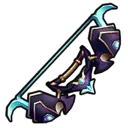

Lanceiro da Geada
Arco · Tier 14 · Nível 42
Batizado em homenagem às imensas flechas de gelo que dispara. Mais do que capaz de derrubar um gigante do cavalo, se eles tivessem cavalos, lógico.
Atributos
Ataque
1.160
Economia
Valor
10.500.000
Tempo de fabricação
2d 5h
XP do comerciante
305.000
Trabalhadores: Carpinteiro 36, Mestre 32, Ferreiro 29
Receita


Marcos do projeto
4
Tempo de fabricação -20%
10
-9 Joias
18
Valor +25%
30
Desbloqueia projeto: Sacrilégio
45
Chance de qualidade +1